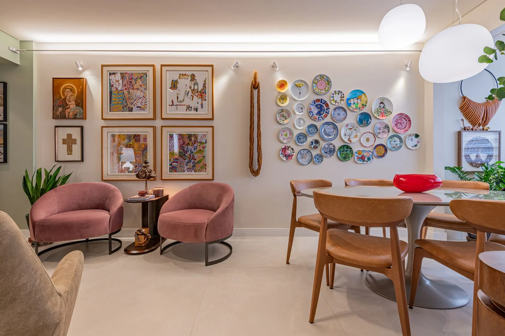

Residencial

01 — Apê FB
Apê FB
Reforma completa de apartamento com paleta quente, marcenaria sob medida e uma curadoria de arte que dá personalidade a cada ambiente. Um lar autoral, do estar à suíte.